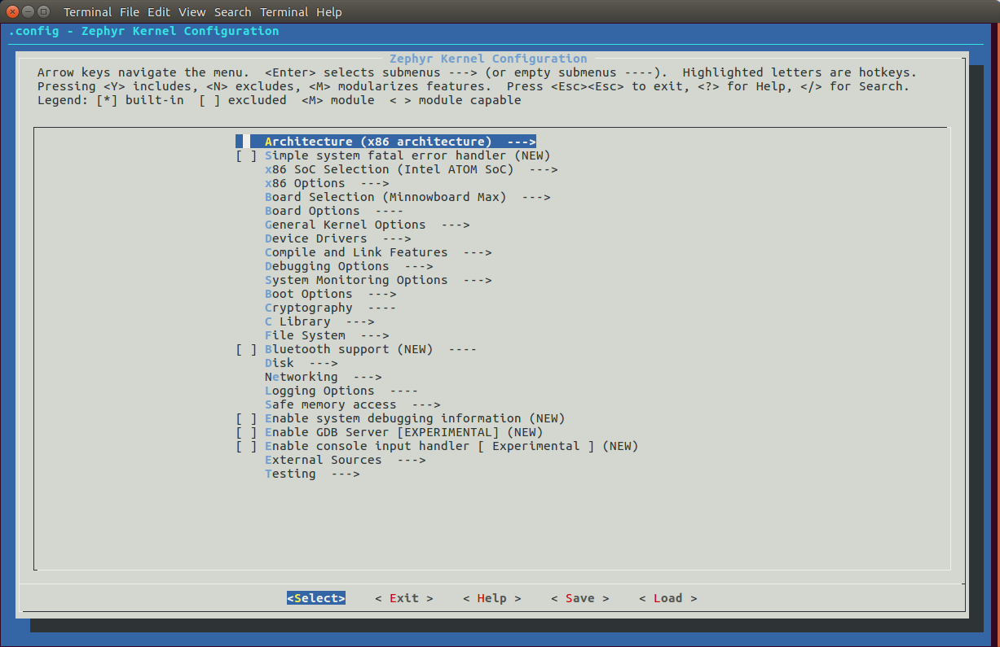
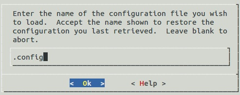
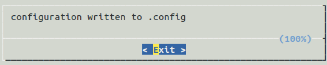

Application Development Primer¶
Note
In this document, we’ll assume your application directory is
~/app, and that its build directory is ~/app/build.
(These terms are defined in the following Overview.)
Overview¶
Zephyr’s build system is based on CMake.
The build system is application-centric, and requires Zephyr-based applications to initiate building the kernel source tree. The application build controls the configuration and build process of both the application and Zephyr itself, compiling them into a single binary.
Zephyr’s base directory hosts Zephyr’s own source code, its kernel configuration options, and its build definitions.
The files in the application directory link Zephyr with the application. This directory contains all application-specific files, such as configuration options and source code.
An application in its simplest form has the following contents:
~/app
├── CMakeLists.txt
├── prj.conf
└── src
└── main.c
These contents are:
- CMakeLists.txt: This file tells the build system where to find the other application files, and links the application directory with Zephyr’s CMake build system. This link provides features supported by Zephyr’s build system, such as board-specific kernel configuration files, the ability to run and debug compiled binaries on real or emulated hardware, and more.
- Kernel configuration files: An application typically provides
a configuration file (ending in
.conf) that specifies values for one or more kernel configuration options. If omitted, the application’s existing kernel configuration option values are used; if no existing values are provided, the kernel’s default configuration values are used. - Application source code files: An application typically provides one
or more application-specific files, written in C or assembly language. These
files are usually located in a sub-directory called
src.
Once an application has been defined, you can use CMake to create project files for building it from a directory where you want to host these files. This is known as the build directory. Application build artifacts are always generated in a build directory; Zephyr does not support “in-tree” builds.
Important
You must create a build directory yourself, and call cmake from
there. The Zephyr build system does not create build directories for you.
The following sections describe how to create, build, and run Zephyr applications, followed by more detailed reference material.
Creating an Application¶
Follow these steps to create a new application directory. (Refer to Samples and Demos for existing applications provided as part of Zephyr.)
Create an application directory on your workstation computer, outside of the Zephyr base directory. Usually you’ll want to create it somewhere under your user’s home directory.
For example, in a Unix shell, navigate to a location where you want your application to reside, then enter:
$ mkdir appIt’s recommended to place all application source code in a subdirectory named
src. This makes it easier to distinguish between project files and sources.Continuing the Unix shell example from the previous step, enter:
$ cd app $ mkdir src
Create a
CMakeLists.txtfile in your application directory with the following contents:include($ENV{ZEPHYR_BASE}/cmake/app/boilerplate.cmake NO_POLICY_SCOPE) project(NONE)
Place your application source code in the
srcsub-directory. For this example, we’ll assume you created a file namedsrc/main.c.Add your source code files to the
apptarget in your application directory’sCMakeLists.txt. For example, to addsrc/main.c, add the following line to yourCMakeLists.txt:target_sources(app PRIVATE src/main.c)
Create one or more files containing your application’s configuration options. Zephyr’s configuration uses the same Kconfig system used by the Linux kernel, but with its own configuration tree.
If you followed the above steps, you can now create a file named
prj.confin your application directory. It will be used automatically by the Zephyr build system.More information on Zephyr configuration is available below.
Applications integrate with the Zephyr build system using the boilerplate code
shown above in CMakeLists.txt. The following important variables
configure the Zephyr build system:
- ZEPHYR_BASE: Sets the path to the Zephyr base directory. This is
usually an environment variable set by the
zephyr-env.shscript, as you learned when getting started with Zephyr in Building and Running an Application. You can also select a specific Zephyr base directory by replacing$ENV{ZEPHYR_BASE}with the specific base you’d like to use instead. - BOARD: Selects the board that the application’s build will use for
the default configuration. This can be defined in the environment, in your
application’s
CMakeLists.txtfile, or in thecmakecommand line. - CONF_FILE: Indicates the name of one or more configuration
fragment files. Each file includes kconfig configuration values that
override the default configuration values. Like BOARD, this can
also be defined in the environment, in your application’s
CMakeLists.txtfile, or in thecmakecommand line.
Build an Application¶
The Zephyr build system compiles and links all components of an application into a single application image that can be run on simulated hardware or real hardware.
Basics¶
Navigate to the application directory
~/app.Enter the following commands to build the application’s
zephyr.elfimage using the configuration settings for the board type specified in the application’sCMakeLists.txt.$ mkdir build $ cd build $ cmake .. $ make
If desired, you can build the application using the configuration settings specified in an alternate
.conffile using theCONF_FILEparameter. These settings will override the settings in the application’s.configfile or its default.conffile. For example:$ export CONF_FILE=prj.alternate.conf $ cmake .. $ make
If desired, you can generate project files for a different board type than the one specified in the application’s
CMakeLists.txtby defining the environment variableBOARD.Both the
CONF_FILEandBOARDparameters can be specified when building the application.
Build Directory Contents¶
When using the Ninja backend instead of the Make backend, a build directory looks like this:
~/app/build
├── build.ninja
├── CMakeCache.txt
├── CMakeFiles
├── cmake_install.cmake
├── rules.ninja
└── zephyr
The most notable files in the build directory are:
build.ninja, which can be invoked to build the application.- A
zephyrdirectory, which is the working directory of the generated build system, and where most generated files are created and stored.
After running ninja, the following build output files will be written to
the zephyr sub-directory of the build directory. (This is not the
Zephyr base directory, which contains the Zephyr source code etc. and is
described above.)
.config, which contains the configuration settings used to build the application.- Various object files (
.ofiles and.afiles) containing compiled kernel and application code. zephyr.elf, which contains the final combined application and kernel binary. Other binary output formats, such as.hexand.bin, are also supported.
Rebuilding an Application¶
Application development is usually fastest when changes are continually tested. Frequently rebuilding your application makes debugging less painful as the application becomes more complex. It’s usually a good idea to rebuild and test after any major changes to the application’s source files, CMakeLists.txt files, or configuration settings.
Important
The Zephyr build system rebuilds only the parts of the application image potentially affected by the changes. Consequently, rebuilding an application is often significantly faster than building it the first time.
Sometimes the build system doesn’t rebuild the application correctly because it fails to recompile one or more necessary files. You can force the build system to rebuild the entire application from scratch with the following procedure:
Open a terminal console on your host computer, and navigate to the build directory
~/app/build.Enter the following command to delete the application’s generated files, except for the
.configfile that contains the application’s current configuration information.$ make cleanAlternatively, enter the following command to delete all generated files, including the
.configfiles that contain the application’s current configuration information for those board types.$ make pristineRebuild the application normally following the steps specified in Build an Application above.
Run an Application¶
An application image can be run on a real board or emulated hardware.
Running on a Board¶
Most boards supported by Zephyr let you flash a compiled binary using
the CMake flash target to copy the binary to the board and run it.
Follow these instructions to flash and run an application on real
hardware:
Build your application, as described in Build an Application.
Make sure your board is attached to your host computer. Usually, you’ll do this via USB.
Run this console command from the build directory,
~/app/build, to flash the compiled Zephyr binary and run it on your board:$ make flash
The Zephyr build system integrates with the board support files to use hardware-specific tools to flash the Zephyr binary to your hardware, then run it.
Each time you run the flash command, your application is rebuilt and flashed again.
In cases where board support is incomplete, flashing via the Zephyr build system may not be supported. If you receive an error message about flash support being unavailable, consult your board’s documentation for additional information on how to flash your board.
Note
When developing on Linux, it’s common to need to install board-specific udev rules to enable USB device access to your board as a non-root user. If flashing fails, consult your board’s documentation to see if this is necessary.
Running in an Emulator¶
The kernel has built-in emulator support for QEMU. It allows you to run and test an application virtually, before (or in lieu of) loading and running it on actual target hardware. Follow these instructions to run an application via QEMU:
Build your application for one of the QEMU boards, as described in Build an Application.
For example, you could set
BOARDto:qemu_x86to emulate running on an x86-based boardqemu_cortex_m3to emulate running on an ARM Cortex M3-based board
Run this console command from the build directory,
~/app/build, to flash the compiled Zephyr binary and run it in QEMU:$ make runPress
Ctrl A, Xto stop the application from running in QEMU.The application stops running and the terminal console prompt redisplays.
Each time you execute the run command, your application is rebuilt and run again.
Application Debugging¶
This section is a quick hands-on reference to start debugging your application with QEMU. Most content in this section is already covered in QEMU and GNU_Debugger reference manuals.
In this quick reference, you’ll find shortcuts, specific environmental variables, and parameters that can help you to quickly set up your debugging environment.
The simplest way to debug an application running in QEMU is using the GNU Debugger and setting a local GDB server in your development system through QEMU.
You will need an Executable and Linkable Format (ELF) binary image for
debugging purposes. The build system generates the image in the build
directory. By default, the kernel binary name is
zephyr.elf. The name can be changed using a Kconfig option.
We will use the standard 1234 TCP port to open a GDB server instance. This port number can be changed for a port that best suits the development environment.
You can run QEMU to listen for a “gdb connection” before it starts executing any code to debug it.
qemu -s -S <image>
will setup Qemu to listen on port 1234 and wait for a GDB connection to it.
The options used above have the following meaning:
-SDo not start CPU at startup; rather, you must type ‘c’ in the monitor.-sShorthand for-gdb tcp::1234: open a GDB server on TCP port 1234.
To debug with QEMU and to start a GDB server and wait for a remote connect, run the following inside the build directory of an application:
make debugserver
The build system will start a QEMU instance with the CPU halted at startup and with a GDB server instance listening at the TCP port 1234.
Using a local GDB configuration .gdbinit can help initialize your GDB
instance on every run.
In this example, the initialization file points to the GDB server instance.
It configures a connection to a remote target at the local host on the TCP
port 1234. The initialization sets the kernel’s root directory as a
reference.
The .gdbinit file contains the following lines:
target remote localhost:1234
dir ZEPHYR_BASE
Note
Substitute ZEPHYR_BASE for the current kernel’s root directory.
Execute the application to debug from the same directory that you chose for
the gdbinit file. The command can include the --tui option
to enable the use of a terminal user interface. The following commands
connects to the GDB server using gdb. The command loads the symbol
table from the elf binary file. In this example, the elf binary file name
corresponds to zephyr.elf file:
$ ..../path/to/gdb --tui zephyr.elf
Note
The GDB version on the development system might not support the –tui option. Please make sure you use the GDB binary from the SDK which corresponds to the toolchain that has been used to build the binary.
If you are not using a .gdbinit file, issue the following command inside GDB to connect to the remote GDB server on port 1234:
(gdb) target remote localhost:1234
Finally, the command below connects to the GDB server using the Data
Displayer Debugger (ddd). The command loads the symbol table from the
elf binary file, in this instance, the zephyr.elf file.
The DDD may not be installed in your
development system by default. Follow your system instructions to install
it. For example, use sudo apt-get install ddd on an Ubuntu system.
ddd --gdb --debugger "gdb zephyr.elf"
Both commands execute the gdb. The command name might change depending on the toolchain you are using and your cross-development tools.
CMake Details¶
Overview¶
CMake is used to build your application together with the Zephyr kernel. A CMake build is done in two stages. The first stage is called configuration. During configuration, the CMakeLists.txt build scripts are executed. After configuration is finished, CMake has an internal model of the Zephyr build, and can generate build scripts that are native to the host platform.
CMake supports generating scripts for several build systems, but only Ninja and Make are tested and supported by Zephyr. After configuration, you begin the build stage by executing the generated build scripts. These build scripts can recompile the application without involving CMake following most code changes. However, after certain changes, the configuration step must be executed again before building. The build scripts can detect some of these situations and reconfigure automatically, but there are cases when this must be done manually.
Zephyr uses CMake’s concept of a ‘target’ to organize the build. A target can be an executable, a library, or a generated file. For application developers, the library target is the most important to understand. All source code that goes into a Zephyr build does so by being included in a library target, even application code.
Library targets have source code, that is added through CMakeLists.txt build scripts like this:
target_sources(app PRIVATE src/main.c)
In the above CMakeLists.txt, an existing library target named app
is configured to include the source file src/main.c. The PRIVATE
keyword indicates that we are modifying the internals of how the library is
being built. Using the keyword PUBLIC would modify how other
libraries that link with app are built. In this case, using PUBLIC
would cause libraries that link with app to also include the
source file src/main.c, behavior that we surely do not want. The
PUBLIC keyword could however be useful when modifying the include
paths of a target library.
Application CMakeLists.txt¶
Every application must have a CMakeLists.txt file. This file is the
entry point, or top level, of the build system. The final zephyr.elf
image contains both the application and the kernel libraries.
This section describes some of what you can do in your CMakeLists.txt.
Make sure to follow these steps in order.
If you only want to build for one board, add the name of the board configuration for your application on a new line. For example:
set(BOARD qemu_x86)
Refer to Supported Boards for more information on available boards.
The Zephyr build system determines a value for BOARD by checking the following, in order (when a BOARD value is found, CMake stops looking further down the list):
- Any previously used value as determined by the CMake cache takes highest precedence. This ensures you don’t try to run a build with a different BOARD value than you set during the build configuration step.
- Any value given on the CMake command line using
-DBOARD=YOUR_BOARDwill be checked for and used next. - If an environment variable
BOARDis set, its value will then be used. - Finally, if you set
BOARDin your applicationCMakeLists.txtas described in this step, this value will be used.
If your application uses a configuration file or files other than the usual
prj.conf(orprj_YOUR_BOARD.conf, whereYOUR_BOARDis a board name), add lines setting the CONF_FILE variable to these files appropriately.More details are available below in Application Configuration.
If your application has its own kernel configuration options, add a line setting the location of the Kconfig file that defines them.
An (unlikely) advanced use case would be if your application has its own unique configuration options that are set differently depending on the build configuration.
If you just want to set application specific values for existing Zephyr configuration options, refer to the CONF_FILE description above.
For example, if you have a file named
Kconfigin the same directory as your application’sCMakeLists.txt, add the following line:set(KCONFIG_ROOT ${CMAKE_CURRENT_SOURCE_DIR}/Kconfig)
Make sure to include the following lines in your
Kconfigfile before any application-specific configuration options:mainmenu "Your Application Name" config ZEPHYR_BASE string option env="ZEPHYR_BASE" source "$ZEPHYR_BASE/Kconfig.zephyr" # Your application configuration options go here.
Important
The indented lines above must use tabs, not spaces.
Now include the mandatory boilerplate that integrates the application with the Zephyr build system on a new line, after any lines added from the steps above:
include($ENV{ZEPHYR_BASE}/cmake/app/boilerplate.cmake NO_POLICY_SCOPE) project(NONE)
Now add any application source files to the ‘app’ target library, each on their own line, like so:
target_sources(app PRIVATE src/main.c)
Below is a simple example CMakeList.txt:
set(BOARD qemu_x86)
include($ENV{ZEPHYR_BASE}/cmake/app/boilerplate.cmake NO_POLICY_SCOPE)
project(NONE)
target_sources(app PRIVATE src/main.c)
Application Configuration¶
The application is configured using a set of options that can be customized for application-specific purposes. The Zephyr build system takes a configuration option’s value from the first source in which it is specified, taken from the following available sources, in order:
- An application’s current configuration (i.e. the file
zephyr/.configin the build directory). This can be used during development as described below in Overriding Default Configuration. - The application’s configuration file(s) given by the CONF_FILE variable, either as set explicitly by the user or using one of the default values detailed below.
- The board’s default configuration for the current BOARD
setting (i.e. the
boards/ARCHITECTURE/BOARD/BOARD_defconfigfile in the Zephyr base directory). - The kernel’s default configuration settings (i.e. the default value given to
the option in one of Zephyr’s
Kconfigfiles).
The Zephyr build system determines a value for CONF_FILE by checking the following, in order:
- Any value given to CONF_FILE in your application
CMakeLists.txt, passed to the the CMake command line, or present in the CMake variable cache, takes precedence. - If a CMake command, macro, or function
set_conf_fileis defined, it will be invoked and must set CONF_FILE. - If the file
prj_BOARD.confexists in your application directory, whereBOARDis the BOARD value set earlier, it will be used. - Finally, if
prj.confexists in your application directory, it will be used.
If CONF_FILE specifies multiple files, they will be merged in order.
For information on available kernel configuration options, including inter-dependencies between options, see the Configuration Options Reference Guide.
Setting Application Configuration Values¶
This section describes how to edit Zephyr configuration
(.conf) files.
Add each configuration entry on a new line.
Enable a boolean option by setting its value to
y:CONFIG_SOME_BOOL=y
To ensure that a boolean configuration option is not set, add a line like this instead (including the leading
#symbol):# CONFIG_SOME_BOOL is not set
You can set integer and string options as well, like this:
CONFIG_SOME_INT=42 CONFIG_SOME_STRING="the best value ever"
Ensure that each entry setting an option contains no spaces (including on either side of the = sign).
Use a # followed by a space to comment a line:
# This is a comment.
The example below shows a comment line and an override setting
CONFIG_PRINTK to y:
# Enable printk for debugging
CONFIG_PRINTK=y
Overriding Default Configuration¶
Follow these steps to override an application’s configuration temporarily, perhaps to test the effect of a change.
Note
If you want to permanently alter the configuration you should set
the new value in a .conf file, as described above in
Setting Application Configuration Values.
The steps below describe how to configure your application using a
menu-driven configurator interface. While you can edit your
application’s .config manually, using a configurator tool is
preferred, since it correctly handles dependencies between options.
Generate a Make build system, and use it to run
make menuconfigas follows.Using CMake, create a build directory (
~/app/build) from your application directory (~/app).For example, on a Unix shell:
$ cd ~/app $ mkdir build && cd build $ cmake ..
Run
make menuconfigfrom the build directory (~/app/build).Continuing the above Unix shell example:
$ make menuconfig
A question-based menu opens that allows you to set individual configuration options.

Set kernel configuration values using the following key commands:
Use the arrow keys to navigate within any menu or list.
Press
Enterto select a menu item.- Type an upper case
YorNin the square brackets [ ] to enable or disable a kernel configuration option.
- Type an upper case
Type a numerical value in the parentheses ( ).
Press
Tabto navigate the command menu at the bottom of the display.Note
When a non-default entry is selected for options that are non-numerical, an asterisk
*appears between the square brackets in the display. There is nothing added added the display when you select the option’s default.
For information about any option, select the option and tab to <Help > and press
Enter.Press
Enterto return to the menu.Press
/to bring up a search menu to look for a particular option.After configuring the kernel options for your application, tab to < Save > and press
Enter.The following dialog opens with the < Ok > command selected:

Press
Enterto save the kernel configuration options to the default file name; alternatively, type a file name and pressEnter.Typically, you will save to the default file name unless you are experimenting with various configuration scenarios.
- A
zephyrdirectory will have been created in the build directory.
Note
At present, only a
.configfile can be built. If you have saved files with different file names and want to build with one of these, change the file name to.config. To keep your original.config, rename it to something other than.config.Kernel configuration files, such as the
.configfile, are saved as hidden files inzephyr. To list all your kernel configuration files, enter ls -a at the terminal prompt.The following dialog opens, displaying the file name the configuration was saved to.

- A
Press
Enterto return to the options menu.To load any saved kernel configuration file, tab to < Load > and press
Enter.The following dialog opens with the < Ok > command selected:
To load the last saved kernel configuration file, press < Ok >, or to load another saved configuration file, type the file name, then select < Ok >.
Press
Enterto load the file and return to the main menu.To exit the menu configuration, tab to < Exit > and press
Enter.The following confirmation dialog opens with the < Yes > command selected.
Press
Enterto retire the menu display and return to the console command line.
{kind=link}
{kind=link}
{kind=link}
Application-Specific Code¶
Application-specific source code files are normally added to the
application’s src directory. If the application adds a large
number of files the developer can group them into sub-directories
under src, to whatever depth is needed.
Application-specific source code should not use symbol name prefixes that have been reserved by the kernel for its own use. For more information, see Naming Conventions.
Support for building third-party library code¶
It is possible to build library code outside the application’s src
directory but it is important that both application and library code targets
the same Application Binary Interface (ABI). On most architectures there are
compiler flags that control the ABI targeted, making it important that both
libraries and applications have certain compiler flags in common. It may also
be useful for glue code to have access to Zephyr kernel header files.
To make it easier to integrate third-party components, the Zephyr
build system has defined CMake functions that give application build
scripts access to the zephyr compiler options. The functions are
documented and defined in $ZEPHYR_BASE/cmake/extensions.cmake
and follow the naming convention zephyr_get_<type>_<format>.
The following variables will often need to be exported to the third-party build system.
CMAKE_C_COMPILER,CMAKE_AR.ARCHandBOARD, together with several variables that identify the Zephyr kernel version.
samples/application_development/external_lib is a sample
project that demonstrates some of these features.